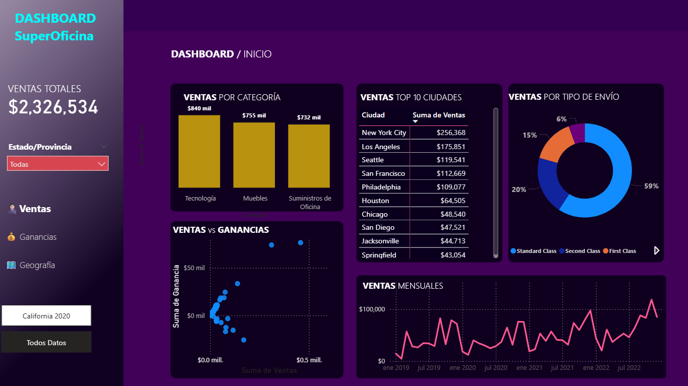

Data Analyst / BI Specialist
Desarrollo modelos de datos, procesos ETL y dashboards automatizados, alineando análisis técnico con objetivos de negocio.

Diseño e implementación de un Data Warehouse en SQL Server utilizando arquitectura Bronze, Silver y Gold. Se desarrollaron procesos de carga incremental, modelado dimensional (Star Schema) y pipelines de transformación para análisis de pedidos, clientes y ventas.
SQL Server · ETL · Data Modeling · Star Schema · GitHub Ver Detalles
Sistema de monitoreo de pedidos retenidos en pool mediante una vista en SQL que se ejecuta diariamente y carga resultados a una tabla en SQL Server. Los datos se conectan a Power BI para visualizar métricas operativas, identificar causas de bloqueo y mejorar tiempos de liberación.
SQL Server · Power BI · Automatización · Data Analysis Ver Detalles
Dashboard en Power BI para analizar comportamiento de ventas, identificar productos más rentables y detectar oportunidades de crecimiento por región y segmento de clientes.
Power BI · Python · Data Analysis Ver Detalles